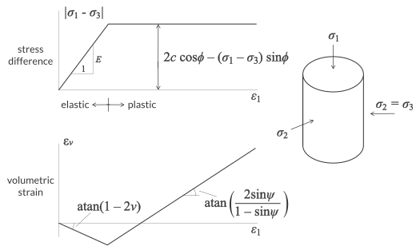
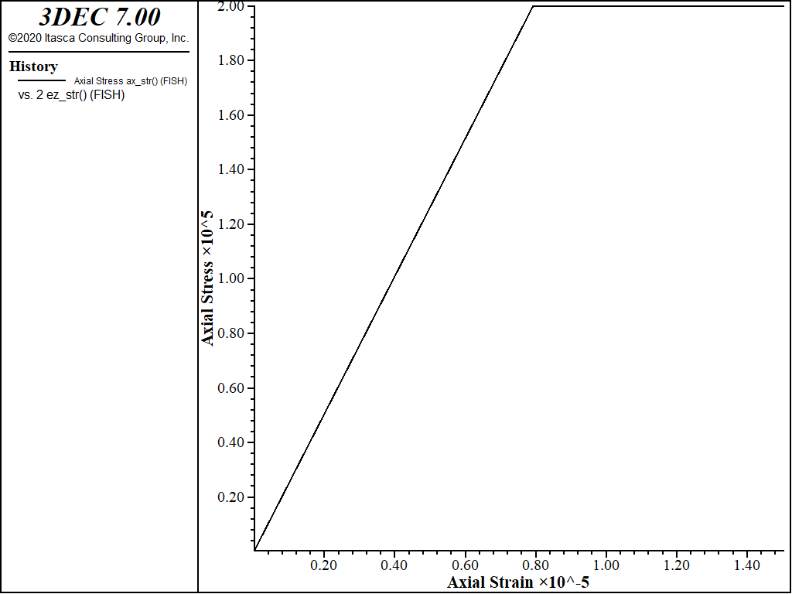
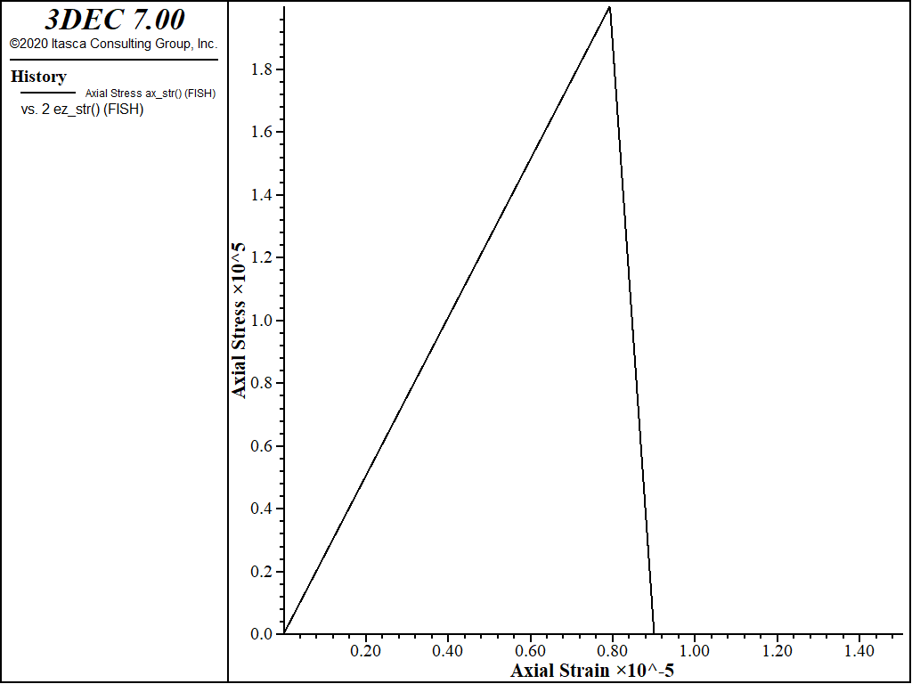
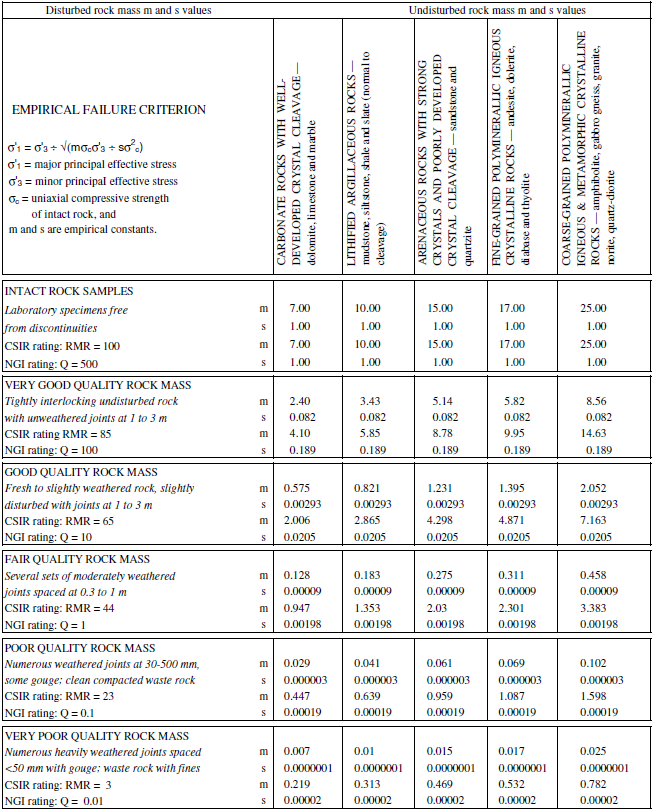

网格单元属性
赋予块体内网格单元的属性通常来自室内试验。以下四节介绍固有的室内试样尺度属性，并列出各种岩石的常见数值。
质量密度
3DEC 模型中每一种非空材料都需要质量密度。其单位为质量除以体积，不包含重力加速度。许多情况下给出的是材料重度。如果重度以力除以体积为单位，则必须先将其除以重力加速度，再作为 3DEC 密度输入。
固有变形属性
3DEC 中大多数可变形块体材料模型，假设材料在弹性范围内具有各向同性行为，由体积模量 \(K\) 和剪切模量 \(G\) 两个弹性常数描述。3DEC 示例大多使用弹性常数 \(K\) 和 \(G\)，而不是杨氏模量 \(E\) 和泊松比 \(ν\)，因为认为体积模量和剪切模量比杨氏模量和泊松比更能对应材料行为的基本方面。（当 \(ν\) 接近 0.5 时，使用 \(E\) 和 \(ν\) 可能导致不稳定。）不过，3DEC 也允许使用 \(E\) 和 \(ν\)，部分示例确实采用这些参数。
从（\(E,ν\)）转换为（\(K,G\)）的方程为：
当 \(ν\) 接近 0.5 时，不应盲目使用上述方程，因为计算的 \(K\) 会不切实际地高，求解收敛会非常缓慢。更好的做法是将 \(K\) 固定为其已知物理值，可由各向同性压缩试验或 P 波速度估计，再根据 \(K\) 和 \(ν\) 计算 \(G\)。
下表汇总了一些选定岩石的典型弹性常数：
| \(E\) (GPa) | \(ν\) | \(K\) (GPa) | \(G\) (GPa) | |
|---|---|---|---|---|
| Berea 砂岩 | 19.3 | 0.38 | 26.8 | 7.0 |
| Hackensack 粉砂岩 | 26.3 | 0.22 | 15.6 | 10.8 |
| Bedford 石灰岩 | 28.5 | 0.29 | 22.6 | 11.1 |
| 含云母页岩 | 11.1 | 0.29 | 8.8 | 4.3 |
| Cherokee 大理岩 | 55.8 | 0.25 | 37.2 | 22.3 |
| 内华达试验场花岗岩 | 73.8 | 0.22 | 43.9 | 30.2 |
固有强度属性
3DEC 中块体材料破坏的基本准则为莫尔—库仑关系，它是对应剪切破坏的线性破坏面：
| 其中： | \(N_\phi\) | = \((1+\sin{\phi}) / (1 - \sin{\phi})\); |
| \(\sigma_1\) | = 大主应力（压应力为负）； | |
| \(\sigma_3\) | = 小主应力； | |
| \(\phi\) | = 摩擦角；以及 | |
| \(c\) | = 黏聚力。 |
若 \(f_s < 0\)，则判定发生剪切屈服。两个强度常数 \(\phi\) 和 \(c\) 通常由室内三轴试验获得。
当法向应力变为拉应力时，莫尔—库仑准则失去物理有效性。但为简便起见，将破坏面延伸至拉伸区，直到 \(\sigma_3\) 等于单轴抗拉强度 \(\sigma^t\)。小主应力不能超过抗拉强度，即
若 \(f_t > 0\)，则判定发生拉伸屈服。岩石和混凝土的抗拉强度通常通过巴西劈裂试验或间接拉伸试验获得。注意，抗拉强度不能超过莫尔—库仑关系顶点极限所对应的 \(\sigma_3\) 值。该最大值为
下面列出一组代表性岩石试样的典型黏聚力、摩擦角和抗拉强度。
| 摩擦 角 （度） |
黏聚力 （MPa） |
抗拉 强度 （MPa） |
|
|---|---|---|---|
| Berea 砂岩 | 27.8 | 27.2 | 1.17 |
| Repetto 粉砂岩 | 32.1 | 34.7 | — |
| 泥质页岩 | 14.4 | 38.4 | — |
| Sioux 石英岩 | 48.0 | 70.6 | — |
| Indiana 石灰岩 | 42.0 | 6.72 | 1.58 |
| Stone Mountain 花岗岩 | 51.0 | 55.1 | — |
| 内华达试验场玄武岩 | 31.0 | 66.2 | 13.1 |
双线性模型的遍布节理组成部分，还需要弱面的强度属性。节理属性见节理属性（Joint Properties）。节理黏聚力和摩擦角属性也适用于遍布节理模型。
破坏后属性
许多情况下，尤其在采矿工程中，材料开始破坏后的响应是工程设计的重要因素。因此，材料模型必须模拟破坏后行为。在 3DEC 中，通过定义以下四类破坏后响应的属性实现：
- 剪胀；
- 剪切硬化／软化；
- 体积硬化／软化；以及
- 拉伸软化。
这些属性仅在按莫尔—库仑关系判定开始破坏后激活。莫尔—库仑模型和双线性应变硬化／软化遍布节理模型可赋予剪胀属性。双线性模型可赋予硬化／软化参数。
剪胀
剪胀是材料发生剪切畸变时伴随的体积变化。剪胀由剪胀角 ψ 表征，该角与塑性体积变化和塑性剪应变之比有关。可在 3DEC 块体塑性模型中指定该角。剪胀角通常由三轴试验或剪切盒试验确定。例如，图 1（Figure 1） 展示了基于莫尔—库仑破坏面的三轴试验理想剪胀关系。剪胀角由体积应变—轴向应变曲线确定。注意，该曲线初始斜率对应弹性阶段，用于测定剪胀角的斜率则对应塑性阶段。

图 1：根据三轴试验结果获得的剪胀角 \(\psi\) 理想化关系（Vermeer 和 de Borst 1984）
对于土、岩石和混凝土，剪胀角通常显著小于材料摩擦角。Vermeer 和 de Borst（1984）给出了以下典型 \(\psi\) 值：
| 密砂 | 15º |
| 松砂 | < 10º |
| 正常固结黏土 | 0º |
| 颗粒状和完整大理岩 | 12º − 20º |
| 混凝土 | 12º |
Vermeer 和 de Borst 发现，无论是土、岩石还是混凝土，剪胀角大致都在 0º 至 20º 之间。3DEC 所有本构模型的剪胀角默认值均为零。
也可为双线性模型遍布节理组成部分中的节理指定剪胀角。该属性通常由直剪试验确定，常见数值可参见节理属性（Joint Properties）所讨论的文献。
剪切硬化／软化
一旦开始塑性屈服，材料硬化或软化的产生就是一个渐进过程。破坏时，混凝土和岩石中的微裂纹、土中的颗粒滑动，使变形越来越呈现非弹性。这还导致材料强度退化和剪切带形成。这些与局部化有关的现象，进一步讨论见 localizationandpath。
在 3DEC 中，通过将莫尔—库仑属性设为塑性应变的函数，模拟剪切硬化和软化，见应变软化／硬化莫尔—库仑（SSoft）模型（Strain-Softening/Hardening Mohr-Coulomb (SSoft) Model）。可使用 表格插值取值（table） 命令指定这些函数。
每项具体分析都必须标定硬化和软化参数，其数值通常由室内三轴试验结果反算。这通常是迭代过程。研究人员已提出多种硬化和软化表达式。例如，Vermeer 和 de Borst（1984）提出摩擦硬化关系
| 其中： | \(\phi\) | = 极限摩擦角； |
| \(\phi_m\) | = 动员摩擦角； | |
| \(e_p\) | = 塑性应变；以及 | |
| \(e_f\) | = 硬化常数。 |
数值试验条件可影响模型的剪切硬化／软化响应。加载速率可能引入惯性效应；可以通过监测不平衡力并相应降低加载速率加以控制。可使用 FISH 函数自动控制加载速率。结果也具有网格依赖性。因此，凡涉及剪切硬化或软化的分析，都应评估不同网格单元尺寸和网格方向下的模型行为。
拉伸软化
开始发生拉伸破坏时，材料抗拉强度通常降至零。莫尔—库仑模型在拉伸破坏时不发生应变软化，达到拉应力极限后，拉应力保持恒定。要模拟拉应力降至零，请使用应变软化（Strain Softening）模型。在 3DEC 中，还可通过塑性拉应变控制抗拉强度下降或拉伸软化的速率。该函数作为模型属性使用，可通过 表格插值取值（table） 命令指定抗拉强度变化速率。
下例的简单拉伸试验，展示莫尔—库仑模型内置的理想塑性拉伸破坏，以及应变软化模型的脆性拉伸破坏。模型对由莫尔—库仑材料组成的立方块体进行拉伸试验，以恒定速度将试样两端拉开。分别采用莫尔—库仑和应变软化网格单元模型进行该试验。
model new
model large-strain off
block create brick 0 1 0 1 0 1
block zone generate hex divisions 1 1 1
; Mohr-Coulomb 模型
block zone cmodel assign mohr-coulomb
block zone prop dens=2500 bulk=1.19e10 shear=1.1e10
block zone prop cohesion 2.72e5 friction 44 tension 2e5
; 应变软化
;block zone cmodel assign strain-softening
;block zone prop dens 2500 bulk=1.19e10 shear=1.1e10
;block zone prop cohesion 2.72e5 friction 44 tension 2e5
;block zone prop table-tension 1
;table '1' add 0 2e5 9e-6 0
;
[velocity = 1e-5]
[area = 1.0]
[length = 1.0]
[ztop = 0.9]
fish def ax_str
; 应力等于反力之和除以面积
local str = 0.0
loop foreach ig block.gp.list
if block.gp.pos.z(ig) > ztop then
str = str + block.gp.force.reaction.z(ig)
endif
end_loop
ax_str = str / area
; 根据压板速度计算应变
ez_str = 2.0*velocity*mech.time / length
end
fish hist name 'Axial Stress' ax_str
fish hist name 'Axial Strain' ez_str
block gridpoint apply vel-z [-1.0*velocity] range pos-z 0.0
block gridpoint apply vel-z [velocity] range pos-z 1.0
model cycle 15000
model save 'mc'
\(\sigma{zz}\) 应力—\(zz\) 应变图（图 2（Figure 2））表明，莫尔—库仑模型的平均应力保持恒定。若将上述示例改用应变软化模型并指定拉伸软化表，即可得到图 3（Figure 3） 所示软化响应。


图 2：莫尔—库仑模型拉伸试验的 \(\sigma_{zz}\) 应力—\(zz\) 应变关系


图 3：采用应变软化模型和拉伸软化表时，拉伸试验的 \(\sigma_{zz}\) 应力—\(zz\) 应变关系
采用应变软化模型代替莫尔—库仑模型后，可通过塑性拉应变函数控制拉伸软化的脆性程度。与剪切软化相同，拉伸软化必须针对每个具体问题和网格尺寸进行标定，因为结果具有网格依赖性。
外推至现场尺度属性
3DEC 模型采用的材料属性，应尽可能接近实际问题的真实值。通常不应将室内测得属性直接用于实际尺度问题的 3DEC 模型。模型中不连续面的存在可以考虑相当一部分属性尺度效应。不过，可能仍需调整块体属性，以表示非均质性、微裂纹、裂缝及其他小型不连续面对岩体响应的影响。
已有多种经验方法用于推导现场尺度属性。下面讨论其中一些较广泛认可的方法。
岩体变形性通常用变形模量 \(E_m\) 定义。如果岩体包含一组相对平行、贯通且等间距的节理，可将其视为等效横观各向同性连续介质来估计 Em。随后可利用节理属性（Joint Properties）中的关系，估计垂直于节理组方向的 \(E_m\)。对于包含多组不连续面的情况，也可估计变形模量。节理属性（Joint Properties）列出的文献提供了多组节理的解。
实际中，岩体结构通常过于不规则，或数据不足，无法使用前述方法。常根据原位压缩试验获得的力—位移曲线确定 \(E_m\)。这类试验包括平板承载试验、扁千斤顶试验和膨胀计试验。
Bieniawski（1978）根据世界各地现场试验结果，提出 \(E_m\) 的经验关系。该关系基于岩体分级评分 RMR。对于评分高于 55 的岩石，试验数据可近似拟合为
\(E_m\) 的单位为 GPa。
对于 \(E_m\) 在 1 至 10 GPa 之间的情况，Serafim 和 Pereira（1983）发现以下关系拟合得更好：
Goodman（1980）和 Brady 与 Brown（1985）进一步讨论了这些方法。
估计岩体强度最广泛认可的方法，是 Hoek 和 Brown（1980）提出的方法。节理岩体的广义 Hoek-Brown 破坏准则定义如下（Hoek 和 Brown 1997）：
其中，\(\sigma'_{1}\) 和 \(\sigma'_{3}\) 分别为破坏时的最大和最小有效应力（压应力为正）；\(m_b\) 为岩体的 Hoek-Brown 常数 \(m\)；\(s\) 和 \(a\) 为取决于岩体特征的常数；\(\sigma_{ci}\) 为完整岩块的单轴抗压强度。
Hoek 和 Brown（1997）将岩体抗拉强度估计为
使用 Hoek-Brown 准则（上述式 (8) 和 (9)）需要三个属性：
- 完整岩块的单轴抗压强度 \(\sigma_{ci}\)；
- 完整岩块的 Hoek-Brown 常数 \(m_i\)；以及
- 岩体的地质强度指标 GSI。它用于估计 Hoek-Brown 常数 \(s\)、\(m_b\) 和 \(a\)。
对于构成岩体的完整岩块，式 (8) 变为
\(\sigma_{ci}\) 和常数 \(m_i\) 应通过对一组三轴试验结果进行统计分析来确定。推荐流程见 Hoek 和 Brown（1997）。该文还给出在可能没有室内试验结果时，初步设计计算可采用的 \(\sigma_{ci}\) 和 \(m\) 估计值。
地质强度指标 GSI 提供一种估计岩体强度折减的体系。可用 Hoek 和 Brown（1997）的两个表估计 GSI，见下方两表。随后，Hoek 和 Brown（1997）给出 GSI 与 \(m_b\)、\(s\) 和 \(a\) 的以下关系：
对于 GSI > 25，
以及
对于 GSI < 25，
以及
表 #zprops-tab-lbSE（引自 Hoek 和 Brown 1988）给出未扰动和受扰动岩体的典型 \(m\) 与 \(s\) 值。
可以根据 Hoek-Brown 准则估计莫尔—库仑摩擦角和黏聚力，例如参见 Hoek（1990）。
对于给定 \(\sigma_3\) 值，函数（式 (8)）的切线代表如下形式的等效莫尔—库仑屈服准则：
其中，\(N_{\phi} = \tfrac{1+\sin{\phi}}{1-\sin{\phi}} = \tan^2(\tfrac{\phi}{2}+45º)\)。
代入可得，\(\sigma^M_c\)
\(\sigma^M_c\) 是该 \(\sigma_3\) 值下岩体的表观单轴抗压强度。
式 (8) 的切线定义为
随后可根据 \(N_{\phi}\) 和 \(\sigma^M_c\) 得到黏聚力（\(c\)）及摩擦角（\(\phi\)）：
 |

（单击表格放大。）
属性分布的空间变化与随机性
可指定材料属性随网格位置调整或变化。事实上，不论模型规模多大，都可以为 3DEC 模型的每个网格单元赋予不同属性。
3DEC 提供两条命令指定材料属性。第一条 设置块体网格单元属性（block zone property） 允许在单条命令中指定多个属性，便于完整指定不同区域的属性，前提是各区域内部的相应属性保持不变。
第二条每次只能指定一个属性，但提供可选关键字，使属性值自动随空间变化。这就是 block zone property-distribution 命令。可用关键字包括 add、multiply、gradient 和 vary，可使属性随位置呈固定增量或线性变化。例如，以下命令使黏聚力在 \(x\) 方向线性变化：
block zone property-distribution cohesion 1e6 gradient (-1e5,0,0)
也可以通过 FISH 赋予属性的初始分布。
3DEC 还可研究材料非均质性的影响。由于每个单元均可具有独立属性值，可以引入任意统计属性分布。zone property-distribution 命令提供两个可选关键字，为所选属性施加随机分布。deviation-gaussian 假定属性服从正态（高斯）分布，均值为 \(v\)，标准差为 \(s\)。deviation-uniform 假定均匀分布，均值为 \(v\)，标准差为 \(s\)。如果 \(s\) 很大，应注意确保属性不会取负值。例如，以下命令将得到平均摩擦角 40°、标准差 ±5%：
block zone property-distribution friction 45 deviation-gaussian 2
| 这些内容对您有帮助吗？… | FLAC3D © 2019, Itasca | 原文更新于 2020 年 10 月 8 日 |
| 版权与免责声明 | ||